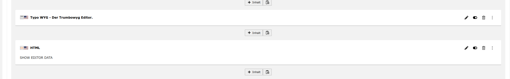
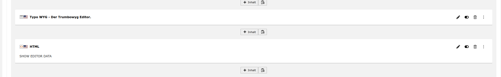

Trumbowyg Editor¶
Aggiungere il Typoscript del visualizzatore al modello del sito.

Aggiungere il visualizzatore Typowyg al contenuto della pagina.
 

Aprire la configurazione dell’elemento, passare alla palette Typo WYG e inserire un ID istanza.

Inserire la corrispondente Configurazione.

Le librerie del plugin da caricare (ad esempio, se nella configurazione si usa speechrecognition, è necessario aggiungere qui anche la libreria speechrecognition, in modo che questa funzionalità sia disponibile e il pulsante del microfono sia visualizzato nell’editor).
Utilizzare Javascript per accedere al contenuto inserito dall’utente nell’editor.